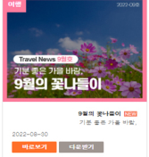
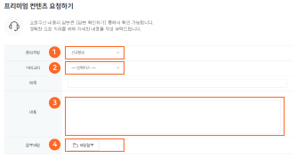

<div id="premiumGuide" class="comm_pop_wrap on_secretary fixed_dim" style="display:none;">
	<div class="pop_body">
		<h1 class="pop_logo"></h1>
		<button type="button" class="btn_close btn_black"></button>
		<div class="pop_cont_wrap ">
			<h1 class="title">프리미엄 컨텐츠 이렇게 이용해보세요!</h1>
			<div class="premium_guide_cont">
				<ul class="guide_list style1">
					<li>기존 자료를 웹에서 자유롭게 열람 또는 다운로드 받아서 확인 가능합니다!  
						<span class="img"></span>
					</li>
					<li>검색기능을 통해서 나에게 필요한 자료를 검색해보세요.
						<span class="img"></span>
					</li>
					<li>매달 초 따끈 따끈한 최신 자료가 업데이트 됩니다!</li>
				</ul>
			</div>
			<div class="premium_guide_cont notice">
				<h1 class="title">프리미엄 컨텐츠 이용시 꼭 확인해주세요!</h1>
				<ul class="guide_list style1">
					<li>제공되는 모든 자료의 저작권은 더샵(엠서클)에 있으며, 외부 매체에  게시 및 
						타인에게 공유를 금합니다.</li>
					<li>해당 자료의 상업적  활용은 불가능합니다. 
					</li>
				</ul>
			</div>
		</div>
	</div>
</div>
<div id="pop_svguide" class="comm_pop_modal owl_pop_wrap on_secretary" style="display:none;">
    <div class="pop_layer">
		<h1 class="pop_logo"></h1>
		<div class="owl-carousel">		
			<div class="item">
				<button type="button" class="btn_close btn_black"></button>
				<div class="pop_cont_wrap cont2">
					<h2 class="title">The비서 '1:1 서비스' 이렇게 이용해 보세요!</h2>
					<div class="sub_tit">바쁜 약국 업무로 필요했던 정보나 자료 직접 찾아보기 힘드신가요?
						<br>이젠 The비서가 약사님에게 필요한 정보를 대신 제공해 드립니다!
					</div>
					<h3 class="title orange">잠깐! The비서 서비스 이용 전 다음 사항을 확인해 주세요!</h3>
					<ul class="guide_list style2">
						<li>The비서 '1:1 서비스'는 회원당 분기 1회 이용 가능합니다.
							<br><span class="desc">(단,제공받은 자료에 수정이 필요할 경우 최초 1회 재문의 통해 수정 가능합니다. )</span>
						</li>
						<li>'1:1 서비스'는 카테고리별로 필수로 작성 해야하는 요청 양식이 있습니다.
							<br>해당 양식을 최대한 자세하고 정확하게 작성해주세요.</li>
						<li>'1:1 서비스'에서 제공된 자료는 오직, 약사님을 위해 작성된 자료임으로
							<br>제3자에게 상업적 목적으로 활용하실 수 없습니다.</li>
					</ul>
				</div>
			</div>
			<div class="item">
				<button type="button" class="btn_close btn_black"></button>
				<div class="pop_cont_wrap cont3">
					<h2 class="title">The비서 '1:1 서비스' 이렇게 이용해 보세요!</h2>
					<span class="img_guide"></span>
					<ul class="guide_list style2">
						<li>문의 유형을 선택해주세요!
							<br><span class="desc">* 신규문의 : 최초 문의이실 경우 선택해주세요.</span>
							<br><span class="desc">* 재문의 : 기존 문의한 답변에 수정이 필요하실 경우 선택해주세요.</span>
						</li>
						<li>카테고리를 선택해주세요! 문의하실 자료가 속하는 카테고리를 선택해주세요.
							<br>현재 11개의 카테고리만 요청 가능하며, 추후 더 많은 카테고리 확대 예정입니다.
						</li>
						<li>문의 내용의 제목과 내용을 작성해주세요!
							<br>각 카테고리별로 필수 요청양식이 노출되며, 해당 양식을 최대한 자세하게 작성 부탁드립니다.
						</li>
						<li>
							요청하실 카테고리에 참고 자료나, 예시 자료가 있다면 파일 업로드 해주세요!
							<br>없으실 경우, 생략 가능합니다.
						</li>
					</ul>
				</div>
			</div>
		</div>		
	</div>
</div>

<script>
	var owl = $(".owl-carousel").owlCarousel({
		items:1,
		loop: true,
		nav: true,
		touchDrag: false,
  		mouseDrag: false,
	});
	$('.online_secretay .sv_giude').click(function(e){
		e.preventDefault();
		owl.trigger('to.owl.carousel', [0, 400]);
		modalLayer = shopUI.modalLayer($("#pop_svguide"), {
			position: [0, 0],
			closeClass: "btn_close"
		});		
	})
	$('.online_secretay .premium').click(function(){
		$('#premiumGuide').css('display','block');
		$('body').css('overflow','hidden');
	})
	$('#premiumGuide .btn_close').click(function(){
		$('#premiumGuide').css('display','none');
		$('body').removeAttr('style');
	})

    // 테스트용 레이어팝업 노출
	modalLayer = shopUI.modalLayer($("#pop_svguide"), {
		closeClass: "btn_close"
	});
	
</script>